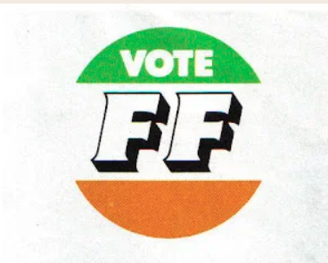

French Parties
From the conservative RPR/UMP to the far-right Front National/Rassemblement National, French parties have long used logo changes to demonstrate ideological evolution.
The PPLD is a research archive documenting how political parties across Europe have represented themselves visually over time.
Austria to the United Kingdom
Four decades of political branding
Filter by country, party, year and type
Political logos are more than graphic design. They are compressed ideological statements that encode party values, historical context, and electoral ambition into a single mark, tracing how parties across 18 European democracies have represented themselves from 1980 to present day.
How parties present themselves visually tells us about their ideology and their moment in history
From the clean modernism of Scandinavian social democrats to the nationalist symbolism of far-right movements, political logos reflect the aesthetic and ideological currents of their time. The PPLD makes these visual histories searchable and comparable for the first time.
Tracking rebranding moments, cross-party visual borrowing, and graphic style shifts over time
The database supports comparative research in political communication, visual rhetoric, and party branding. Filter across countries and decades to identify patterns in how parties signal ideological shifts, target new demographics, or respond to electoral defeat through rebranding.
From the conservative RPR/UMP to the far-right Front National/Rassemblement National, French parties have long used logo changes to demonstrate ideological evolution.
Norway, Sweden, Denmark and Finland share a tradition of clean, typographic logo design that reflects the modernist aesthetic of Nordic social democracy, yet each country's parties have evolved distinctively.

UK Labour's rose-era rebranding and Fianna Fáil's decades-long visual continuity both illustrate how parties in the British Isles use visual identity to signal stability or change to the electorate.
A rebrand that redefined a party's image
In 2006, the British Tory Party under David Cameron's leadership changed the recognizable torch logo to a tree. Over the past 20 years, the tree itself has gone from green to the UK flag to blue. This is one of the many logo transformations the PPLD traces over time.